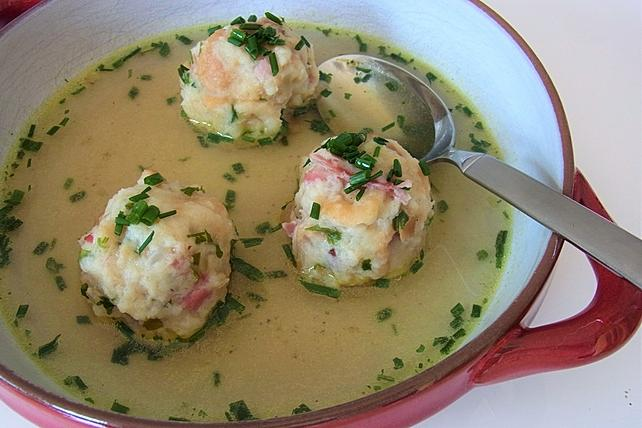

Südtiroler Speckknödel

Ein wohl typisches, vielleicht aus dem Urlaub in den Südtiroler Bergen bekanntes Gericht sind die Südtiroler Speckknödel, die im Original natürlich mit feinem Südtiroler Speck zubereitet werden müssen.
Zutaten
- 600 g Brötchen oder Weißbrot vom Vortag
- 200 g Speck, Südtiroler (besser geht geselchter Bauch)
- 1 Zwiebel(n), fein gehackte
- 2 EL Butter
- 4 Ei(er)
- 500 ml Milch
- 4 EL Mehl
- 2 EL Petersilie, gehackte
- 3 Liter Fleischbrühe
- 1 Bund Schnittlauch, gehackter
Zubereitung
- In einer Pfanne zerlassen wir die Butter und lassen die Zwiebel, die wir fein gehackt haben, ganz langsam darin braten, bis sie richtig braun ist.
- Die Brötchen bzw. das Weißbrot und den Speck schneiden wir in kleine Würfel und geben alles in eine große Schüssel. Nun kommen die restlichen Zutaten hinzu und es wird alles gut gemischt. Sobald die Zwiebeln braun sind, kommen sie mit samt der Butter auch dazu und es wird ein weiteres Mal gemischt. Diese Masse nun ca. 20 min. ruhen lassen.
- Dann mit nassen Händen ca. tennisballgroße Knödel formen und diese ungefähr 20 Minuten in der Fleischbrühe bei kleinem Feuer köcheln lassen. Mit der Brühe auf Tellern anrichten, mit Schnittlauch bestreuen und servieren.
Return to mainpage